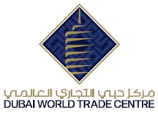

Summary
I have been working in the events industry for over 20 years across the MENA region in organizing and marketing trade fairs, exhibitions, conferences, road shows across a wide number of industries, including technology, construction, health care, and investment and finance. My career experience also includes publishing, marketing (traditional and digital) and sales roles.
I hold a degree in hospitality management, attended several customer service excellence and sales training along with good experience in advertising, communications, marketing and organizing and executing international and corporate events i.e. Trade Fairs, Trade and Buyers Delegations, B2B Meeting, Gala Dinners, Product Launch, Press Conferences.
Work Experience
Senior Regional Sales Director - Middle East
etouches
October 2014 – December 2015 (1 year 3 months)
Achievements:
- Successfully launched and promoted the company’s services to the local and regional market.
- Participated in RFPs, attended networking events, participated in exhibitions and called calling.
- Fulfilled the role of account management and local support to local and regional clients.
Within 6 months I solely succeeded in introduced etouches and TapCrowd services to the main exhibition organisers, events’ management agencies, government departments, airlines, and corporations which positioned the company as A Go-To comprehensive events’ management solution provided competing with leading local and international competitors who have been well established in the region.

Business Development Manager
Dubai World Trade Centre
October 2011 – October 2014 (3 years 1 month)
As a Business Development Manager – Visitor Management at the Dubai World Trade Center I focused on supporting exhibitors to maximize their investments at trade shows through the provision of effective matchmaking services and key buyers programs. I have designed, launched and managed the ‘Hosted Key Buyers Programme’ of DWTC Eye-Connect Vision-X, Dubai International Jewellery Week and Seafex Exhibition Hosted Buyer Programme where I identified and recruited over 700 top buyers from Middle East, Africa and CIS countries.
I worked closely with embassies and commercial attachés in the UAE and coordinated the visits of top official and trade delegations including ministers, ambassadors, VIP to DWTC exhibitions namely Gulfood and Gitex exhibitions.
The above was achieved by:
- Fostering relationships with senior level industry professionals from major government agencies, trade bodies and leading organizations in the MENA region, engaging them in new business idea and securing their participation as sponsors, speakers, buyers or VIP guests.
- Acquiring over 50,000 records of GCC companies from different chambers of commerce and industry across the GCC.
- Working extensively with the corporate department team on the ‘MICE Visitors Experience’ project launched by the DWTC top management which aims towards delivering the top levels of services to buyers attending DWTC exhibitions.
- Identifying affiliates and supporters i.e. official and partner hotels, official airlines, DMC (local and international), government entities and negotiating/finalised MOU and contracts with them.
- Researching and identifying industry related publication, online media and bloggers to support marketing teams to ensure maximum promotion of the Hosted Buyers programmes.
- Preparing sales and marketing briefs and work closely with sales and marketing teams as well as logistics teams to ensure successful delivery of collaterals, presentations and the events.
Within 6 months I solely succeeded in introduced etouches and TapCrowd services to the main exhibition organisers, events’ management agencies, government departments, airlines, and corporations which positioned the company as A Go-To comprehensive events’ management solution provided competing with leading local and international competitors who have been well established in the region.
International Marketing Manager
Arabian Group for Exhibitions and Conferences
March 2009 – November 2011 (2 years 9 months)
Achievements:
- Recruited new national participations at the company’s exhibitions by establishing partnership with Foreign Trade Associations in Taiwan, China, Malaysia, Italy and Turkey such as TAITRA, CCPIT, NAFED, UNIDI and DTM either directly or through appointed agents which resulted.
- Expanded and developed the Sales Agents’ network globally.
- Launched new exhibitions and prepared the profile of these exhibitions such as Moms, Babies & Kids, Beauty Care, Syria Logistex, Safety & Security, Medical IT and VET Expo.
- Revamped the company corporate identity as well as the exhibitions corporate identities and visuals.
- Successfully organised on behalf of the Syrian Government, all logistic services related to the Syrian Mission and Conferences “Invest in Syria” in Turkey and China, these services included travel, B2B meetings, coordination with foreign governments, etc…
- Organised Syrian Trade Delegations to different destinations such as Taiwan, China and Turkey and Foreign Trade Delegations to Syria.
I managed and oversaw the marketing team to ensure high quality contents and delivery of collaterals, PR and marketing campaigns (ATL & BTL), websites development, researches in Arabic and English. I developed new websites and online services for the company exhibitions i.e. online pre-registration, exhibitors’ catalogue, etc… to meet international standards.
I have also assisted the Head of the CRM team in enhancing of Archive & Database Department and introduced CRM application ‘ACT!’ to the company and assisted in purchasing and implementing it.
Education
Damascus Travel & Tourism Institute
Diploma, Hotel/Motel Administration/Management
1992 – 1995
Al Thaqafi High School - Damascus, Syria
High School, High School/Secondary Diplomas and Certificates
1988 – 1993